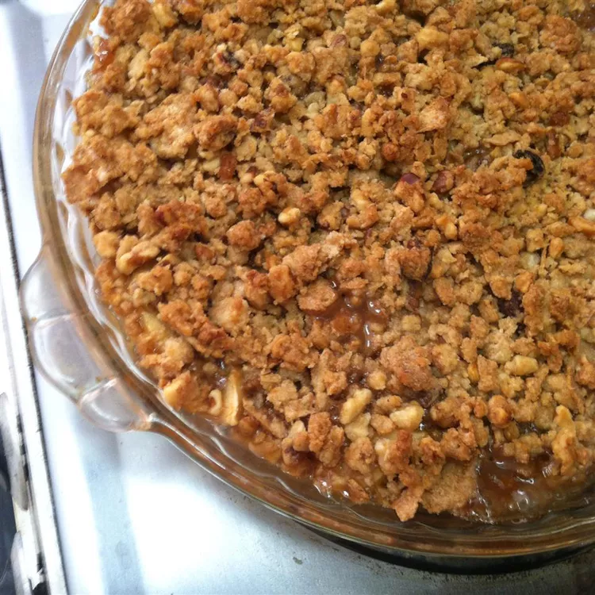

Homepage
Easy Homemade Pizza Dough

Description
This apple, cranberry, and pear crisp topped with walnuts is a variation of a traditional apple crisp — we love it! Comice pears taste best with this recipe.
Ingredients
- 2 Rome Beauty apples - peeled, cored, and cubed
- 2 medium Comice pears - peeled, cored, and cubed
- ½ cup dried cranberries
- 2 tablespoons honey
- 1 ½ tablespoons lemon juice
- 1 tablespoon all-purpose flour
- ½ cup all-purpose flour
- ½ cup packed brown sugar
- ½ cup quick cooking oats
- ¼ cup ground walnuts (optional)
- ½ cup unsalted butter, cut into pieces
Steps
- Preheat the oven to 375 degrees F (190 degrees C). Lightly grease an 8-inch baking dish.
- Mix apples, pears, cranberries, honey, lemon juice, and 1 tablespoon flour together in the prepared dish.
- Mix 1/2 cup flour, brown sugar, oats, and walnuts together in a medium bowl. Cut in butter until mixture resembles coarse crumbs. Sprinkle over fruit mixture.
- Bake in the preheated oven until golden brown and crisp on top, about 45 minutes.